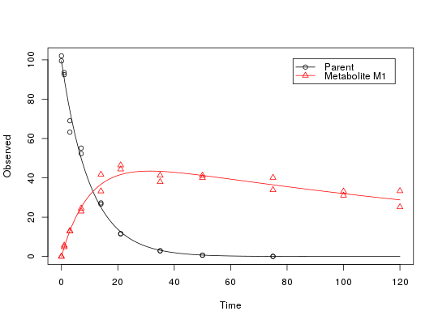

Usage
"plot"(x, fit = x, obs_vars = names(fit$mkinmod$map), xlab = "Time", ylab = "Observed", xlim = range(fit$data$time), ylim = "default", col_obs = 1:length(fit$mkinmod$map), pch_obs = col_obs, lty_obs = rep(1, length(fit$mkinmod$map)), add = FALSE, legend = !add, show_residuals = FALSE, maxabs = "auto", lpos = "topright", inset = c(0.05, 0.05), ...)
Arguments
- x
-
Alias for fit introduced for compatibility with the generic S3 method.
- fit
-
an object of class
mkinfit.
- obs_vars
-
A character vector of names of the observed variables for which the
data and the model should be plotted. Defauls to all observed variables
in the model.
- xlab
-
label for the x axis.
- ylab
-
label for the y axis.
- xlim
-
plot range in x direction.
- ylim
-
plot range in y direction.
- col_obs
-
colors used for plotting the observed data and the corresponding model prediction lines.
- pch_obs
-
symbols to be used for plotting the data.
- lty_obs
-
line types to be used for the model predictions.
- add
-
should the plot be added to an existing plot?
- legend
-
should a legend be added to the plot?
- show_residuals
-
should residuals be shown in the lower third of the plot?
- maxabs
-
Maximum absolute value of the residuals. This is used for the scaling of
the y axis and defaults to "auto".
- lpos
-
position of the legend. Passed to
legend as the first argument.
- inset
-
Passed to
legend if applicable.
- ...
-
further arguments passed to
plot.
Description
Solves the differential equations with the optimised and fixed parameters
from a previous successful call to mkinfit and plots
the observed data together with the solution of the fitted model.
Value
The function is called for its side effect.
Examples
# One parent compound, one metabolite, both single first order, path from
# parent to sink included
SFO_SFO <- mkinmod(parent = mkinsub("SFO", "m1", full = "Parent"),
m1 = mkinsub("SFO", full = "Metabolite M1" ))
Successfully compiled differential equation model from auto-generated C code.
fit <- mkinfit(SFO_SFO, FOCUS_2006_D, quiet = TRUE)
plot(fit)
